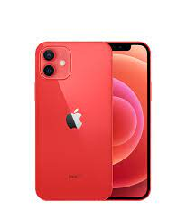

Điện thoại di động Apple iPhone 13 - Chính hãng VN/A
Tất cả iPhone chính hãng VN/A được phân phối tại Hoàng Hà Mobile đều được nhập trực tiếp từ Công ty TNHH Apple Việt Nam. HoangHa Mobile là nhà bán lẻ ủy quyền chính thức của Apple tại Việt Nam.
Mua iPhone 13 chính hãng VN/A giá rẻ tại Hoàng Hà Mobile
Với những cải tiến không ngừng nghỉ cho những sản phẩm điện thoại thông minh của mình, Apple là hãng smartphone luôn nhận được sự tin tưởng từ người tiêu dùng Việt Nam. Dòng sản phẩm iPhone 13 được ra mắt gần đây với màu sắc mới và nâng cấp đáng kể về phần cứng của điện thoại đang nhận được rất nhiều sự quan tâm từ người hâm mộ.
Thiết kế nhiều màu sắc với camera chéo nổi bật
Theo thông báo từ phía Apple, iPhone 13 năm nay sẽ có kích thước màn hình 6.1 inch. Nhìn chung, ngôn ngữ thiết kế vẫn sẽ không có quá nhiều thay đổi so với thế hệ tiền nhiệm iPhone 12, vẫn là các cạnh vát phẳng vuông góc. Tuy nhiên, hãng đã rút gọn phần notch nhỏ hơn 20%, để tăng thêm diện tích hiển thị cho người dùng. Mặt trước làm từ kính cường lực Ceramic Shield có độ bền hơn tới 4 lần so với kính cường lực thông thường. iPhone 13 năm nay được trang bị tấm nền Super Retina XDR OLED sáng hơn 28% so với năm ngoái, đạt tối đa 1200 nits khi hiển thị các video và ảnh HDR. Với sự trang bị này bạn có thể trải nghiệm đa tác vụ từ học tập, làm việc cho tới giải trí tối ưu

Điểm khiến thiết kế của sản phẩm này trở nên nổi bật nhất chính là cụm camera sau được xếp chéo nhau, thay vì đặt dọc cùng hướng như thiết bị cũ. Vì vậy, chỉ cần nhìn mặt lưng, người dùng đã có thể dễ dàng nhận biết được đây chính là iPhone 13. Ngoài những màu sắc quen thuộc như mọi năm là Xám, Trắng, Vàng, iPhone 13 năm nay còn có thêm màu Xanh Dương và Hồng Pastel cực kỳ nữ tính, phù hợp với phái nữ.
Chipset A15 Bionic tăng hiệu suất lên đến 50%
Cấu hình của iPhone 13 đã không khiến người dùng thất vọng. Sản phẩm được hãng trang bị chipset A15 Bionic kiến trúc 5 lõi GPU. Con chip này được xây dựng dựa trên thế hệ thứ hai của TSMC giúp tối ưu điện năng và nâng cao năng suất của 5G, có khả năng chiến mọi tựa game đồ họa hot nhất hiện nay một cách mượt mà. So với bộ vi xử lý A14 Bionic của thế hệ cũ, hiệu suất cũng tăng 50%, giúp việc xử lý mọi tác vụ đồ họa nhanh và mạnh hơn gấp đôi.